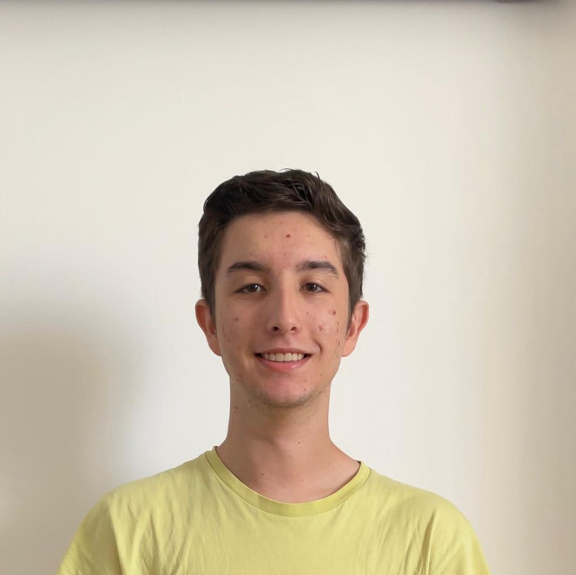

Sóc un estudiant de DAW1 que ve de Batxillerat amb interès en el mon de la informàtica. M’agrada treballar solitari, i busco aplicar la meva capacitat d’organització i creativitat en projectes relacionats amb llenguatges de marques i comunicació visual. Aquest és el meu portafoli acadèmic on mostro tots els exercicis realitzats a l'assignatura de Llenguatges de marques.
Saber més...